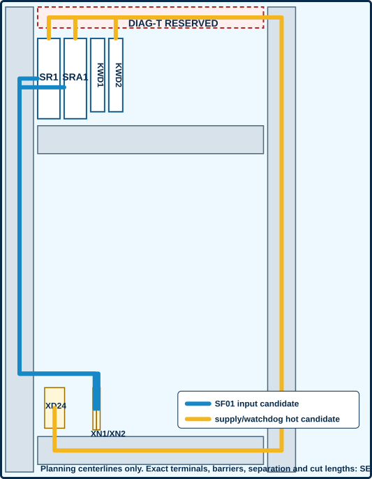

P0.7 reconciled to P1.21
planning centerlines only
no physical route released
for DF-01 watchdog circuitry
The blue and gold lines are corridor centerlines tied to the P0.7 planning frame. They are not wire cut lengths or actual terminal-entry geometry. Every numeric separation, barrier, fill, bend and termination decision remains SELECTION REQUIRED.

Stale P0.7 → P1.21 route correction
| Record | P0.7 meaning | P1.21 candidate meaning | Disposition |
|---|---|---|---|
| P2P-005 | SR1:A1 → KWD2:14SR1_A1_WD_GATED | KWD2:14 → SRA1:A1SRA1_A1_WD_GATED | SUPERSEDED BY P1.21 CANDIDATE; ROUTE NOT RELEASED |
| P2P-015 | KWD1:14 → KWD2:11WD_SUPPLY_INTERMEDIATE | KWD1:14 → KWD2:11WD_SRA1_SUPPLY_INTERMEDIATE | NET NAME CORRECTED; ROUTE NOT RELEASED |
| P2P-035 | XD24:02 → SRA1:A1SAFETY_24V | XD24:02 → SR1:A1SAFETY_24V | PROPOSED TERMINAL REALLOCATION; SELECTION REQUIRED; ROUTE NOT RELEASED |
| P2P-039 | XD24:06 → KWD1:A1SAFETY_24V | XD24:06 → KWD1:A1SAFETY_24V | RETAINED CANDIDATE; ROUTE NOT RELEASED |
| P2P-040 | XD24:07 → KWD1:11SAFETY_24V | XD24:07 → KWD1:11SAFETY_24V | RETAINED CANDIDATE; ROUTE NOT RELEASED |
| P2P-042 | XD24:09 → KWD2:A1SAFETY_24V | XD24:09 → KWD2:A1SAFETY_24V | RETAINED CANDIDATE; ROUTE NOT RELEASED |
| P2P-043 | XD24:10 → KWD2:21SAFETY_24V | XD24:10 → KWD2:21SAFETY_24V | RETAINED CANDIDATE; ROUTE NOT RELEASED |
What the zero-crossing result means
At the declared planning centerlines, the supply/watchdog-hot routes do not intersect the credited-input routes. This does not prove installed separation because component terminals, conductor width, duct partitions, covers, ferrules and installation tolerances are unresolved.
Sol review lineage
The supplied Sol summary is the same R12 independent review already controlled by this repository. It remains valid as a readiness warning and is not counted as a new independent round. No Sol blocker receives qualified closure here.